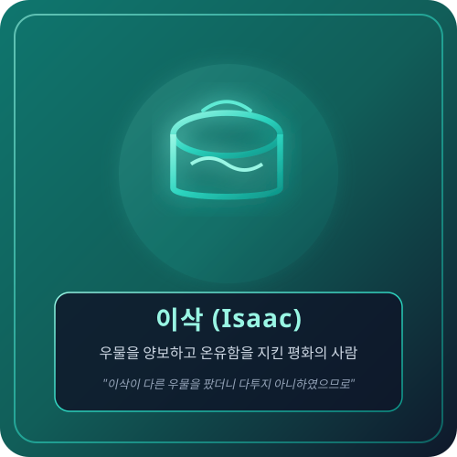

Be Still & Listen to His Voice
LISTEN
내면의 소리와 성경 말씀에 귀 기울이는 시간
🕊️
LISTEN Assistant
● 실시간 영적 컨텐츠 추천 진행 중
📚 LISTEN 큐레이션 인터넷 컨텐츠 라이브러리
에니어그램 유형별 영적 필요를 채워주는 검증된 찬양, 설교, 영성 칼럼, 묵상집 메타데이터 모음입니다.
진단 진행도
1 / 10
질문 텍스트가 들어갑니다.
질문 서브 타이틀이 들어갑니다.
3w2
매력적인 사람 (The Charmer)
열정적이고 친근하며 성과를 이끄는 리더
성격 요약 설명 텍스트

🕊️ 당신과 닮은 성경 인물
성경 인물
인물 타이틀
"대표 구절"
인물 설명 텍스트가 들어갑니다.
📖 당신을 향한 주님의 우선 말씀
마태복음 11:28
"수고하고 짐 진 자들아 다 내게로 오라..."
말씀 묵상 가이드
🌱 영적 성장 가이드
성장 팁 텍스트
🙏 오늘의 1줄 기도문
기도문 텍스트